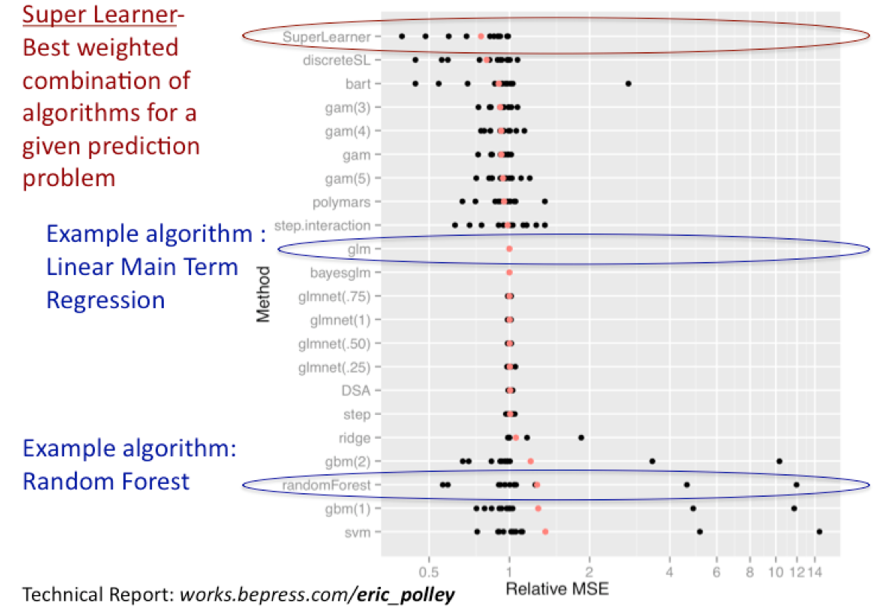
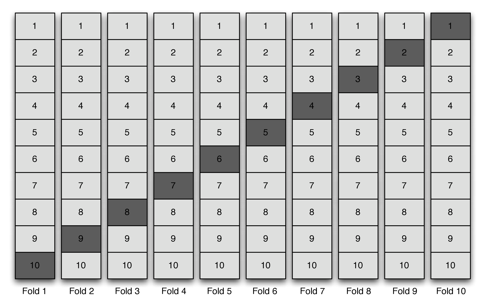

3 Super (Machine) Learning
Ivana Malenica and Rachael Phillips
Based on the sl3 R package by Jeremy
Coyle, Nima Hejazi, Ivana Malenica, Rachael Phillips, and Oleg Sofrygin.
Updated: 2021-08-16
Learning Objectives
By the end of this chapter you will be able to:
Select an objective function that (i) aligns with the intention of the analysis and (ii) is optimized by the target parameter.
-
Assemble a diverse library of learners to be considered in the Super Learner ensemble. In particular, you should be able to:
- Customize a learner by modifying it’s tuning parameters.
- Create several different versions of the same learner at once by specifying a grid of tuning parameters.
- Curate covariate screening pipelines in order to pass a screener’s output, a subset of covariates, as input for another learner that will use the subset of covariates selected by the screener to model the data.
Specify the learner for ensembling (the metalearner) such that it corresponds to your objective function.
Fit the Super Learner ensemble with nested cross-validation to obtain an estimate of the performance of the ensemble itself on out-of-sample data.
Obtain
sl3variable importance metrics.Interpret the fit for discrete and continuous Super Learners’ from the cross-validated risk table and the coefficients.
Justify the base library of machine learning algorithms and the ensembling learner in terms of the prediction problem, statistical model \(\M\), data sparsity, and the dimensionality of the covariates.
Motivation
- A common task in data analysis is prediction – using the observed data (input variables and outcomes) to learn a function that can map new input variables into a predicted outcome.
- For some data, algorithms that learn complex relationships between variables are necessary to adequately model the data. For other data, main terms regression models might fit the data quite well.
- It is generally impossible to know a priori which algorithm will be the best for a given data set and prediction problem.
- The Super Learner solves this issue of algorithm selection by creating an ensemble of many algorithms, from the simplest (intercept-only) to most complex (neural nets, tree-based methods, support vector machines, etc.).
- Super Learner works by using cross-validation in a manner that theoretically (in large samples) guarantees the resulting fit will be as good as possible, given the algorithms provided.
Introduction
In Chapter 1, we introduced the Roadmap for Targeted Learning as a general template to translate real-world data applications into formal statistical estimation problems. The first steps of this roadmap define the statistical estimation problem, which establish
- The data $O$ as a random variable, or equivalently, a realization of a particular experiment/study, which has probability distribution \(P_0\). This is written \(O \sim P_0\), and \(P_0\) is also commonly referred to as the data-generating process (DGP) and also the data-generating distribution (DGD). The data structure \(O\) is comprised of variables, such as a vector of covariates \(W\), a treatment or exposure \(A\), and an outcome \(Y\), \(O=(W,A,Y) \sim P_0\). We often observe the random variable \(O\) \(n\) times, by repeating the common experiment \(n\) times. For example, \(O_1,\ldots, O_n\) random variables could be the result of a random sample of \(n\) subjects from a population, collecting baseline characteristics \(W\), randomly assigning treatment \(A\), and then later measuring an outcome \(Y\).
- A statistical model \(\M\) as a set of possible probability distributions that could have given rise to the data. It’s essential for \(\M\) to only constrained by factual subject-matter knowledge in order to guarantee \(P_0\) resides in the statistical model, written \(P_0 \in \M\). Continuing the example from step 1, the following restrictions could be placed on the statistical model: the \(O_1, \ldots, O_n\) observations in the data are independent and identically distributed (i.i.d.), the assignment of treatment \(A\) was random and not based on covariates \(W\).
- A translation of the scientific question of interest into a function of \(P_0\), the target statistical estimand \(\Psi(P_0)\). For example, we might be interested in the average difference in mean outcomes under treatment \(A=1\) versus placebo \(A=0\): \(\Psi(P_0)=E_{P_0}\Big[E_{P_0}(Y|A=1,W)−E_{P_0}(Y|A=0,W)\Big]\). Note that, if the scientific question is causal, then it’s translation will produce a target causal estimand; another layer of translation, identifiability, is required to express the target causal estimand as a function of the observed data distribution \(P_0\). See causal target parameters for more information on causal quantities, causal models and identifiability. Note that if the target estimand is causal, step 3 also requires establishing so-called “identifiability” of this estimand from the observed data. See causal target parameters for more detail on causal models and identifiability.
After finalizing steps 1–3 above, the estimation procedure can be specified. We advocate for the use of the Super Learner (SL) algorithm in the estimation procedure it is flexible and grounded in optimality theory (van der Laan, Polley, and Hubbard 2007).
Why use the Super Learner?
- It offers a system for combining/ensembling many machine learning (ML) algorithms into an improved ML algorithm.
- In large samples, SL is proven to perform at least as well as the unknown best candidate ML algorithm (van der Laan and Dudoit 2003; Van der Vaart, Dudoit, and Laan 2006).
- When we have tested different ML algorithms on actual data and looked at the performance, never does one algorithm always win (see below).
 The figure above shows the performance of several different ML algorithms, including the SL, across many datasets. Here, the performance was assessed with the relative mean squared error and the target estimand that was being estimated for all datasets was the conditional mean outcome, given covariates (Polley and van der Laan 2010).
3.0.1 General Overview of the Algorithm
- SL uses cross-validation and an objective function (e.g., loss function) to optimize the fit of the target parameter, based on a weighted combination of a so-called “library” of candidate ML algorithms.
- The library of ML algorithms consists of functions (“learners” in the SL nomenclature). These functions should align with the statistical model, both in terms of it’s vastness and any potential constraints, where the statistical model’s constraints are restrictions based on subject-matter knowledge regarding the process that generated the data.
- The so-called “metalearning”, or ensembling of the library of ML algorithms has been shown to be adaptive and robust, even in small samples (Polley and van der Laan 2010).
3.0.1.1 Cross-validation
- There are many different cross-validation schemes, which are designed to accommodate different study designs, data structures, and prediction problems. See cross-validation for more detail.

The figure above shows an example of \(V\)-fold cross-validation with \(V=10\)
folds, and this is the default cross-validation structure in the sl3 R
package. The darker boxes represent the so-called “validation data” and the
lighter boxes represent the so-called “training data”. The following details
are important to notice:
- Across all folds, there are \(V\) (10) copies of the dataset. The only difference between each copy is the coloring, which distinguishes the subset of the data that’s considered as the training data from the subset that’s considered as the validation data.
- Within each fold 1/\(V\) (1/10) of the data is the validation data.
- Across all folds, all of the data will be considered as validation data and no observation will be included twice as validation data. Therefore, the total number of validation data observations across all of the folds is equal to the total number of observations in the data.
3.0.1.2 Step-by-step procedure with V-fold cross-validation
- Fit each learner (say there are \(K\) learners) on the whole dataset. We refer to these learners that are trained on the whole dataset as “full-fit” learners.
- Break up the data evenly into \(V\) disjoint subsets. Separately, create \(V\) copies of the data. For each copy \(v\), where \(v=1,\ldots,V\), create the \(V\) folds by labelling the portion of the data that was included in subset \(v\) as the validation sample, and the labelling what’s remaining of the data as the training sample.
- For each fold \(v\), \(v=1,\ldots,V\), fit each learner (say there are \(K\) learners) on the training sample and predict the validation sample outcomes by providing each fitted learner with the validation sample covariates as input. Notice that each learner will be fit \(V\) times. We refer to these learners that are trained across the \(V\) cross-validation folds as “cross-validated fit” learners.
- Combine the validation sample predictions from all folds and all learners to create the so-called \(K\) column matrix of “cross-validated predictions”. This matrix is also commonly referred to as the \(Z\) matrix. Notice that it contains, for each learner, out-of-sample predictions for all of the observations in the data.
- Train the metalearner (e.g., a non-negative least squares regression) on data with predictors and outcomes being the \(Z\) matrix and the observed data outcomes, respectively. The metalearner — just like any ordinary ML algorithm — estimates the parameters of it’s model using the training data and afterwards, the fitted model can be used to obtain predicted outcomes from new input data. What’s special about the metalearner is that it’s estimated model parameters (e.g., regression coefficients) correspond to it’s predictors, which are the variables in the \(Z\) matrix, the \(K\) learners’ predictions. Once the metalearner is fit, it can be used to obtain predicted outcomes from new input data; that is, new \(K\) learners predictions’ can be supplied to the fitted metalearner in order to obtain predicted outcomes.
- The fitted metalearner and the full-fit learners define the weighted combination of the \(K\) learners, finalizing the Super Learner (SL) fit. To obtain SL predictions the full-fit learners’ predictions are first obtained and then fed as input to the fitted metalearner; the metalearner’s output is the SL predictions.
3.0.1.3 How to pick the library of candidate ML algorithms?
- The library of candidate ML algorithms should be chosen based on contextual
knowledge regarding the study/experiment that generated the data, and on the
information available in the data.
- Having a “go-to” library to use as a “default” when the sample size is relatively large can be useful in practice.
- The algorithms may range from a simple linear regression model to multi-step algorithms involving screening covariates, penalizations, optimizing tuning parameters, etc.
3.0.1.4 Theoretical Foundations
For more detail on Super Learner algorithm we refer the reader to Polley and van der Laan (2010) and van der Laan, Polley, and Hubbard (2007). The optimality results for the cross-validation selector among a family of algorithms were established in van der Laan and Dudoit (2003) and extended in Van der Vaart, Dudoit, and Laan (2006).
sl3 “Microwave Dinner” Implementation
We begin by illustrating the core functionality of the SL algorithm as
implemented in sl3.
The sl3 implementation consists of the following steps:
- Load the necessary libraries and data
- Define the machine learning task
- Make an SL by creating library of base learners and a metalearner
- Train the SL on the machine learning task
- Obtain predicted values
WASH Benefits Study Example
Using the WASH Benefits Bangladesh data, we are interested in predicting
weight-for-height z-score whz using the available covariate data. More
information on this dataset, and all other data that we will work with, are
described in this chapter of the tlverse
handbook. Let’s begin!
0. Load the necessary libraries and data
First, we will load the relevant R packages, set a seed, and load the data.
library(data.table)
library(dplyr)
library(readr)
library(ggplot2)
library(SuperLearner)
library(origami)
library(sl3)
library(knitr)
library(kableExtra)
# load data set and take a peek
washb_data <- fread(
paste0(
"https://raw.githubusercontent.com/tlverse/tlverse-data/master/",
"wash-benefits/washb_data.csv"
),
stringsAsFactors = TRUE
)
head(washb_data) %>%
kable() %>%
kableExtra:::kable_styling(fixed_thead = T) %>%
scroll_box(width = "100%", height = "300px")| whz | tr | fracode | month | aged | sex | momage | momedu | momheight | hfiacat | Nlt18 | Ncomp | watmin | elec | floor | walls | roof | asset_wardrobe | asset_table | asset_chair | asset_khat | asset_chouki | asset_tv | asset_refrig | asset_bike | asset_moto | asset_sewmach | asset_mobile |
|---|---|---|---|---|---|---|---|---|---|---|---|---|---|---|---|---|---|---|---|---|---|---|---|---|---|---|---|
| 0.00 | Control | N05265 | 9 | 268 | male | 30 | Primary (1-5y) | 146.40 | Food Secure | 3 | 11 | 0 | 1 | 0 | 1 | 1 | 0 | 1 | 1 | 1 | 0 | 1 | 0 | 0 | 0 | 0 | 1 |
| -1.16 | Control | N05265 | 9 | 286 | male | 25 | Primary (1-5y) | 148.75 | Moderately Food Insecure | 2 | 4 | 0 | 1 | 0 | 1 | 1 | 0 | 1 | 0 | 1 | 1 | 0 | 0 | 0 | 0 | 0 | 1 |
| -1.05 | Control | N08002 | 9 | 264 | male | 25 | Primary (1-5y) | 152.15 | Food Secure | 1 | 10 | 0 | 0 | 0 | 1 | 1 | 0 | 0 | 1 | 0 | 1 | 0 | 0 | 0 | 0 | 0 | 1 |
| -1.26 | Control | N08002 | 9 | 252 | female | 28 | Primary (1-5y) | 140.25 | Food Secure | 3 | 5 | 0 | 1 | 0 | 1 | 1 | 1 | 1 | 1 | 1 | 0 | 0 | 0 | 1 | 0 | 0 | 1 |
| -0.59 | Control | N06531 | 9 | 336 | female | 19 | Secondary (>5y) | 150.95 | Food Secure | 2 | 7 | 0 | 1 | 0 | 1 | 1 | 1 | 1 | 1 | 1 | 1 | 0 | 0 | 0 | 0 | 0 | 1 |
| -0.51 | Control | N06531 | 9 | 304 | male | 20 | Secondary (>5y) | 154.20 | Severely Food Insecure | 0 | 3 | 1 | 1 | 0 | 1 | 1 | 0 | 0 | 0 | 0 | 1 | 0 | 0 | 0 | 0 | 0 | 1 |
1. Define the machine learning task
To define the machine learning task (predict weight-for-height Z-score
whz using the available covariate data), we need to create an sl3_Task
object.
The sl3_Task keeps track of the roles the variables play in the machine
learning problem, the data, and any metadata (e.g., observational-level
weights, IDs, offset).
Also, if we had missing outcomes, we would need to set drop_missing_outcome = TRUE when we create the task. In the next analysis, with the IST stroke trial
data, we do have a missing outcome. In the following chapter, we need to
estimate this missingness mechanism; which is the conditional probably that
the outcome is observed, given the history (i.e., variables that were measured
before the missingness). Estimating the missingness mechanism requires learning
a prediction function that outputs the predicted probability that a unit
is missing, given their history.
# specify the outcome and covariates
outcome <- "whz"
covars <- colnames(washb_data)[-which(names(washb_data) == outcome)]
# create the sl3 task
washb_task <- make_sl3_Task(
data = washb_data,
covariates = covars,
outcome = outcome
)
#> Warning in process_data(data, nodes, column_names = column_names, flag = flag, :
#> Missing covariate data detected: imputing covariates.This warning is important. The task just imputed missing covariates for us.
Specifically, for each covariate column with missing values, sl3 uses the
median to impute missing continuous covariates, and the mode to impute binary
and categorical covariates.
Also, for each covariate column with missing values, sl3 adds an additional
column indicating whether or not the value was imputed, which is particularly
handy when the missingness in the data might be informative.
Also, notice that we did not specify the number of folds, or the loss function in the task. The default cross-validation scheme is V-fold, with \(V=10\) number of folds.
Let’s visualize our washb_task:
washb_task
#> A sl3 Task with 4695 obs and these nodes:
#> $covariates
#> [1] "tr" "fracode" "month" "aged"
#> [5] "sex" "momage" "momedu" "momheight"
#> [9] "hfiacat" "Nlt18" "Ncomp" "watmin"
#> [13] "elec" "floor" "walls" "roof"
#> [17] "asset_wardrobe" "asset_table" "asset_chair" "asset_khat"
#> [21] "asset_chouki" "asset_tv" "asset_refrig" "asset_bike"
#> [25] "asset_moto" "asset_sewmach" "asset_mobile" "delta_momage"
#> [29] "delta_momheight"
#>
#> $outcome
#> [1] "whz"
#>
#> $id
#> NULL
#>
#> $weights
#> NULL
#>
#> $offset
#> NULL
#>
#> $time
#> NULLWe can’t see when we print the task, but the default cross-validation fold structure (\(V\)-fold cross-validation with \(V\)=10 folds) was created when we defined the task.
length(washb_task$folds) # how many folds?
#> [1] 10
head(washb_task$folds[[1]]$training_set) # row indexes for fold 1 training
#> [1] 1 2 3 4 5 6
head(washb_task$folds[[1]]$validation_set) # row indexes for fold 1 validation
#> [1] 12 21 29 41 43 53
any(
washb_task$folds[[1]]$training_set %in% washb_task$folds[[1]]$validation_set
)
#> [1] FALSETip: If you type washb_task$ and then press the tab button (you will
need to press tab twice if you’re not in RStudio), you can view all of the
active and public fields and methods that can be accessed from the washb_task
object.
2. Make a Super Learner
Now that we have defined our machine learning problem with the sl3_Task, we
are ready to make the Super Learner (SL). This requires specification of
- A set of candidate machine learning algorithms, also commonly referred to as a library of learners. The set should include a diversity of algorithms that are believed to be consistent with the true data-generating distribution.
- A metalearner, to ensemble the base learners.
We might also incorporate
- Feature selection, to pass only a subset of the predictors to the algorithm.
- Hyperparameter specification, to tune base learners.
Learners have properties that indicate what features they support. We may use
sl3_list_properties() to get a list of all properties supported by at least
one learner.
sl3_list_properties()
#> [1] "binomial" "categorical" "continuous" "cv"
#> [5] "density" "h2o" "ids" "importance"
#> [9] "offset" "preprocessing" "sampling" "screener"
#> [13] "timeseries" "weights" "wrapper"Since we have a continuous outcome, we may identify the learners that support
this outcome type with sl3_list_learners().
sl3_list_learners("continuous")
#> [1] "Lrnr_arima" "Lrnr_bartMachine"
#> [3] "Lrnr_bayesglm" "Lrnr_bilstm"
#> [5] "Lrnr_bound" "Lrnr_caret"
#> [7] "Lrnr_cv_selector" "Lrnr_dbarts"
#> [9] "Lrnr_earth" "Lrnr_expSmooth"
#> [11] "Lrnr_gam" "Lrnr_gbm"
#> [13] "Lrnr_glm" "Lrnr_glm_fast"
#> [15] "Lrnr_glmnet" "Lrnr_grf"
#> [17] "Lrnr_gru_keras" "Lrnr_gts"
#> [19] "Lrnr_h2o_glm" "Lrnr_h2o_grid"
#> [21] "Lrnr_hal9001" "Lrnr_HarmonicReg"
#> [23] "Lrnr_hts" "Lrnr_lightgbm"
#> [25] "Lrnr_lstm_keras" "Lrnr_mean"
#> [27] "Lrnr_multiple_ts" "Lrnr_nnet"
#> [29] "Lrnr_nnls" "Lrnr_optim"
#> [31] "Lrnr_pkg_SuperLearner" "Lrnr_pkg_SuperLearner_method"
#> [33] "Lrnr_pkg_SuperLearner_screener" "Lrnr_polspline"
#> [35] "Lrnr_randomForest" "Lrnr_ranger"
#> [37] "Lrnr_rpart" "Lrnr_rugarch"
#> [39] "Lrnr_screener_correlation" "Lrnr_solnp"
#> [41] "Lrnr_stratified" "Lrnr_svm"
#> [43] "Lrnr_tsDyn" "Lrnr_xgboost"Now that we have an idea of some learners, we can construct them using the
make_learner function or the new method.
# choose base learners
lrn_glm <- make_learner(Lrnr_glm)
lrn_mean <- Lrnr_mean$new()We can customize learner hyperparameters to incorporate a diversity of different
settings. Documentation for the learners and their hyperparameters can be found
in the sl3 Learners
Reference.
lrn_lasso <- make_learner(Lrnr_glmnet) # alpha default is 1
lrn_ridge <- Lrnr_glmnet$new(alpha = 0)
lrn_enet.5 <- make_learner(Lrnr_glmnet, alpha = 0.5)
lrn_polspline <- Lrnr_polspline$new()
lrn_ranger100 <- make_learner(Lrnr_ranger, num.trees = 100)
lrn_hal_faster <- Lrnr_hal9001$new(max_degree = 2, reduce_basis = 0.05)
xgb_fast <- Lrnr_xgboost$new() # default with nrounds = 20 is pretty fast
xgb_50 <- Lrnr_xgboost$new(nrounds = 50)We can use Lrnr_define_interactions to define interaction terms among
covariates. The interactions should be supplied as list of character vectors,
where each vector specifies an interaction. For example, we specify
interactions below between (1) tr (whether or not the subject received the
WASH intervention) and elec (whether or not the subject had electricity); and
between (2) tr and hfiacat (the subject’s level of food security).
interactions <- list(c("elec", "tr"), c("tr", "hfiacat"))
# main terms as well as the interactions above will be included
lrn_interaction <- make_learner(Lrnr_define_interactions, interactions)What we just defined above is incomplete. In order to fit learners with these
interactions, we need to create a Pipeline. A Pipeline is a set of learners
to be fit sequentially, where the fit from one learner is used to define the
task for the next learner. We need to create a Pipeline with the interaction
defining learner and another learner that incorporate these terms when fitting
a model. Let’s create a learner pipeline that will fit a linear model with the
combination of main terms and interactions terms, as specified in
lrn_interaction.
# we already instantiated a linear model learner, no need to do that again
lrn_glm_interaction <- make_learner(Pipeline, lrn_interaction, lrn_glm)
lrn_glm_interaction
#> [1] "Lrnr_define_interactions_TRUE"
#> [1] "Lrnr_glm_TRUE"We can also include learners from the SuperLearner R package.
lrn_bayesglm <- Lrnr_pkg_SuperLearner$new("SL.bayesglm")Here is a fun trick to create customized learners over a grid of parameters.
# I like to crock pot my SLs
grid_params <- list(
cost = c(0.01, 0.1, 1, 10, 100, 1000),
gamma = c(0.001, 0.01, 0.1, 1),
kernel = c("polynomial", "radial", "sigmoid"),
degree = c(1, 2, 3)
)
grid <- expand.grid(grid_params, KEEP.OUT.ATTRS = FALSE)
svm_learners <- apply(grid, MARGIN = 1, function(tuning_params) {
do.call(Lrnr_svm$new, as.list(tuning_params))
})
grid_params <- list(
max_depth = c(2, 4, 6),
eta = c(0.001, 0.1, 0.3),
nrounds = 100
)
grid <- expand.grid(grid_params, KEEP.OUT.ATTRS = FALSE)
grid
#> max_depth eta nrounds
#> 1 2 0.001 100
#> 2 4 0.001 100
#> 3 6 0.001 100
#> 4 2 0.100 100
#> 5 4 0.100 100
#> 6 6 0.100 100
#> 7 2 0.300 100
#> 8 4 0.300 100
#> 9 6 0.300 100
xgb_learners <- apply(grid, MARGIN = 1, function(tuning_params) {
do.call(Lrnr_xgboost$new, as.list(tuning_params))
})
xgb_learners
#> [[1]]
#> [1] "Lrnr_xgboost_100_1_2_0.001"
#>
#> [[2]]
#> [1] "Lrnr_xgboost_100_1_4_0.001"
#>
#> [[3]]
#> [1] "Lrnr_xgboost_100_1_6_0.001"
#>
#> [[4]]
#> [1] "Lrnr_xgboost_100_1_2_0.1"
#>
#> [[5]]
#> [1] "Lrnr_xgboost_100_1_4_0.1"
#>
#> [[6]]
#> [1] "Lrnr_xgboost_100_1_6_0.1"
#>
#> [[7]]
#> [1] "Lrnr_xgboost_100_1_2_0.3"
#>
#> [[8]]
#> [1] "Lrnr_xgboost_100_1_4_0.3"
#>
#> [[9]]
#> [1] "Lrnr_xgboost_100_1_6_0.3"Did you see Lrnr_caret when we called sl3_list_learners(c("binomial"))? All
we need to specify to use this popular algorithm as a candidate in our SL is
the algorithm we want to tune, which is passed as method to caret::train().
# Unlike xgboost, I have no idea how to tune a neural net or BART machine, so
# I let caret take the reins
lrnr_caret_nnet <- make_learner(Lrnr_caret, algorithm = "nnet")
lrnr_caret_bartMachine <- make_learner(Lrnr_caret,
algorithm = "bartMachine",
method = "boot", metric = "Accuracy",
tuneLength = 10
)In order to assemble the library of learners, we need to Stack them
together.
A Stack is a special learner and it has the same interface as all other
learners. What makes a stack special is that it combines multiple learners by
training them simultaneously, so that their predictions can be either combined
or compared.
stack <- make_learner(
Stack, lrn_glm, lrn_polspline, lrn_enet.5, lrn_ridge, lrn_lasso, xgb_50
)
stack
#> [1] "Lrnr_glm_TRUE"
#> [2] "Lrnr_polspline_5"
#> [3] "Lrnr_glmnet_NULL_deviance_10_0.5_100_TRUE_FALSE"
#> [4] "Lrnr_glmnet_NULL_deviance_10_0_100_TRUE_FALSE"
#> [5] "Lrnr_glmnet_NULL_deviance_10_1_100_TRUE_FALSE"
#> [6] "Lrnr_xgboost_50_1"We can also stack the learners by first creating a vector, and then instantiating the stack. I prefer this method, since it easily allows us to modify the names of the learners.
# named vector of learners first
learners <- c(
lrn_glm, lrn_polspline, lrn_enet.5, lrn_ridge, lrn_lasso, xgb_50
)
names(learners) <- c(
"glm", "polspline", "enet.5", "ridge", "lasso", "xgboost50"
)
# next make the stack
stack <- make_learner(Stack, learners)
# now the names are pretty
stack
#> [1] "glm" "polspline" "enet.5" "ridge" "lasso" "xgboost50"We’re jumping ahead a bit, but let’s check something out quickly. It’s straightforward, and just one more step, to set up this stack such that all of the learners will train in a cross-validated manner.
cv_stack <- Lrnr_cv$new(stack)
cv_stack
#> [1] "Lrnr_cv"
#> [1] "glm" "polspline" "enet.5" "ridge" "lasso" "xgboost50"Screening Algorithms for Feature Selection
We can optionally select a subset of available covariates and pass only those variables to the modeling algorithm. The current set of learners that can be used for prescreening covariates is included below.
-
Lrnr_screener_importanceselectsnum_screen(default = 5) covariates based on the variable importance ranking provided by thelearner. Any learner with an importance method can be used inLrnr_screener_importance; and this currently includesLrnr_ranger,Lrnr_randomForest, andLrnr_xgboost. -
Lrnr_screener_coefs, which provides screening of covariates based on the magnitude of their estimated coefficients in a (possibly regularized) GLM. Thethreshold(default = 1e-3) defines the minimum absolute size of the coefficients, and thus covariates, to be kept. Also, amax_retainargument can be optionally provided to restrict the number of selected covariates to be no more thanmax_retain. -
Lrnr_screener_correlationprovides covariate screening procedures by running a test of correlation (Pearson default), and then selecting the (1) top ranked variables (default), or (2) the variables with a pvalue lower than some pre-specified threshold. -
Lrnr_screener_augmentaugments a set of screened covariates with additional covariates that should be included by default, even if the screener did not select them. An example of how to use this screener is included below.
Let’s consider screening covariates based on their randomForest variable
importance ranking (ordered by mean decrease in accuracy). To select the top
5 most important covariates according to this ranking, we can combine
Lrnr_screener_importance with Lrnr_ranger (limiting the number of trees by
setting ntree = 20).
Hang on! Before you think it – we will confess: Bob Ross and us both know that 20 trees makes for a lonely forest, and we shouldn’t consider it, but these are the sacrifices we make for this chapter to be built in time!
miniforest <- Lrnr_ranger$new(
num.trees = 20, write.forest = FALSE,
importance = "impurity_corrected"
)
# learner must already be instantiated, we did this when we created miniforest
screen_rf <- Lrnr_screener_importance$new(learner = miniforest, num_screen = 5)
screen_rf
#> [1] "Lrnr_screener_importance_5"
# which covariates are selected on the full data?
screen_rf$train(washb_task)
#> [1] "Lrnr_screener_importance_5"
#> $selected
#> [1] "aged" "month" "tr" "momheight" "momedu"An example of how to format Lrnr_screener_augment is included below for
clarity.
keepme <- c("aged", "momage")
# screener must already be instantiated, we did this when we created screen_rf
screen_augment_rf <- Lrnr_screener_augment$new(
screener = screen_rf, default_covariates = keepme
)
screen_augment_rf
#> [1] "Lrnr_screener_augment_c(\"aged\", \"momage\")"Selecting covariates with non-zero lasso coefficients is quite common. Let’s
construct Lrnr_screener_coefs screener that does just that, and test it
out.
# we already instantiated a lasso learner above, no need to do it again
screen_lasso <- Lrnr_screener_coefs$new(learner = lrn_lasso, threshold = 0)
screen_lasso
#> [1] "Lrnr_screener_coefs_0_NULL_2"To pipe only the selected covariates to the modeling algorithm, we need to
make a Pipeline, similar to the one we built for the regression model with
interaction terms.
screen_rf_pipe <- make_learner(Pipeline, screen_rf, stack)
screen_lasso_pipe <- make_learner(Pipeline, screen_lasso, stack)Now, these learners will be preceded by a screening step.
We also consider the original stack, to compare how the feature selection
methods perform in comparison to the methods without feature selection.
Analogous to what we have seen before, we have to stack the pipeline and
original stack together, so we may use them as base learners in our super
learner.
# pretty names again
learners2 <- c(learners, screen_rf_pipe, screen_lasso_pipe)
names(learners2) <- c(names(learners), "randomforest_screen", "lasso_screen")
fancy_stack <- make_learner(Stack, learners2)
fancy_stack
#> [1] "glm" "polspline" "enet.5"
#> [4] "ridge" "lasso" "xgboost50"
#> [7] "randomforest_screen" "lasso_screen"We will use the default
metalearner,
which uses
Lrnr_solnp to
provide fitting procedures for a pairing of loss
function and
metalearner
function. This
default metalearner selects a loss and metalearner pairing based on the outcome
type. Note that any learner can be used as a metalearner.
Now that we have made a diverse stack of base learners, we are ready to make the SL. The SL algorithm fits a metalearner on the validation set predictions/losses across all folds.
sl <- make_learner(Lrnr_sl, learners = fancy_stack)We can also use Lrnr_cv to build a SL, cross-validate a stack of
learners to compare performance of the learners in the stack, or cross-validate
any single learner (see “Cross-validation” section of this sl3
introductory tutorial).
Furthermore, we can Define New sl3
Learners which can be used
in all the places you could otherwise use any other sl3 learners, including
Pipelines, Stacks, and the SL.
Recall that the discrete SL, or cross-validated selector, is a metalearner that
assigns a weight of 1 to the learner with the lowest cross-validated empirical
risk, and weight of 0 to all other learners. This metalearner specification can
be invoked with Lrnr_cv_selector.
discrete_sl_metalrn <- Lrnr_cv_selector$new()
discrete_sl <- Lrnr_sl$new(
learners = fancy_stack,
metalearner = discrete_sl_metalrn
)3. Train the Super Learner on the machine learning task
The SL algorithm fits a metalearner on the validation-set predictions in a cross-validated manner, thereby avoiding overfitting.
Now we are ready to train our SL on our sl3_task object, washb_task.
set.seed(4197)
sl_fit <- sl$train(washb_task)4. Obtain predicted values
Now that we have fit the SL, we are ready to calculate the predicted outcome for each subject.
# we did it! now we have SL predictions
sl_preds <- sl_fit$predict()
head(sl_preds)
#> [1] -0.65442 -0.77055 -0.67359 -0.65109 -0.65577 -0.65673We can also obtain a summary of the results.
sl_fit$cv_risk(loss_fun = loss_squared_error)
#> learner coefficients risk se fold_sd
#> 1: glm 0.055571 1.0202 0.023955 0.067500
#> 2: polspline 0.055556 1.0208 0.023577 0.067921
#> 3: enet.5 0.055564 1.0131 0.023598 0.065732
#> 4: ridge 0.055570 1.0153 0.023739 0.065299
#> 5: lasso 0.055564 1.0130 0.023592 0.065840
#> 6: xgboost50 0.055591 1.1136 0.025262 0.077580
#> 7: randomforest_screen_glm 0.055546 1.0271 0.024119 0.069913
#> 8: randomforest_screen_polspline 0.055561 1.0236 0.024174 0.068710
#> 9: randomforest_screen_enet.5 0.055546 1.0266 0.024101 0.070117
#> 10: randomforest_screen_ridge 0.055546 1.0268 0.024120 0.069784
#> 11: randomforest_screen_lasso 0.055546 1.0266 0.024101 0.070135
#> 12: randomforest_screen_xgboost50 0.055523 1.1399 0.026341 0.100112
#> 13: lasso_screen_glm 0.055559 1.0164 0.023542 0.065018
#> 14: lasso_screen_polspline 0.055559 1.0177 0.023520 0.065566
#> 15: lasso_screen_enet.5 0.055559 1.0163 0.023544 0.065017
#> 16: lasso_screen_ridge 0.055559 1.0166 0.023553 0.064869
#> 17: lasso_screen_lasso 0.055559 1.0163 0.023544 0.065020
#> 18: lasso_screen_xgboost50 0.055521 1.1256 0.025939 0.084270
#> 19: SuperLearner NA 1.0135 0.023615 0.067434
#> fold_min_risk fold_max_risk
#> 1: 0.89442 1.1200
#> 2: 0.89892 1.1255
#> 3: 0.88839 1.1058
#> 4: 0.88559 1.1063
#> 5: 0.88842 1.1060
#> 6: 0.96019 1.2337
#> 7: 0.90251 1.1326
#> 8: 0.90167 1.1412
#> 9: 0.90030 1.1319
#> 10: 0.90068 1.1311
#> 11: 0.90043 1.1321
#> 12: 0.92377 1.2549
#> 13: 0.90204 1.1156
#> 14: 0.89742 1.1162
#> 15: 0.90184 1.1154
#> 16: 0.90120 1.1146
#> 17: 0.90183 1.1154
#> 18: 0.96251 1.2327
#> 19: 0.88685 1.1102Cross-validated Super Learner
We can cross-validate the SL to see how well the SL performs on unseen data, and obtain an estimate of the cross-validated risk of the SL.
This estimation procedure requires an outer/external layer of
cross-validation, also called nested cross-validation, which involves setting
aside a separate holdout sample that we don’t use to fit the SL. This external
cross-validation procedure may also incorporate 10 folds, which is the default
in sl3. However, we will incorporate 2 outer/external folds of
cross-validation for computational efficiency.
We also need to specify a loss function to evaluate SL. Documentation for the
available loss functions can be found in the sl3 Loss Function
Reference.
washb_task_new <- make_sl3_Task(
data = washb_data,
covariates = covars,
outcome = outcome,
folds = origami::make_folds(washb_data, fold_fun = folds_vfold, V = 2)
)
CVsl <- CV_lrnr_sl(
lrnr_sl = sl_fit, task = washb_task_new, loss_fun = loss_squared_error
)
CVsl %>%
kable(digits = 4) %>%
kableExtra:::kable_styling(fixed_thead = T) %>%
scroll_box(width = "100%", height = "300px")| learner | coefficients | risk | se | fold_sd | fold_min_risk | fold_max_risk |
|---|---|---|---|---|---|---|
| glm | 0.0556 | 1.0494 | 0.0269 | 0.0797 | 0.9930 | 1.1058 |
| polspline | 0.0556 | 1.0173 | 0.0235 | 0.0684 | 0.9689 | 1.0656 |
| enet.5 | 0.0556 | 1.0239 | 0.0241 | 0.0719 | 0.9731 | 1.0748 |
| ridge | 0.0556 | 1.0271 | 0.0242 | 0.0680 | 0.9791 | 1.0752 |
| lasso | 0.0556 | 1.0243 | 0.0242 | 0.0724 | 0.9731 | 1.0755 |
| xgboost50 | 0.0556 | 1.1789 | 0.0267 | 0.0052 | 1.1752 | 1.1826 |
| randomforest_screen_glm | 0.0556 | 1.0276 | 0.0238 | 0.0662 | 0.9808 | 1.0744 |
| randomforest_screen_polspline | 0.0556 | 1.0259 | 0.0237 | 0.0772 | 0.9713 | 1.0805 |
| randomforest_screen_enet.5 | 0.0556 | 1.0275 | 0.0238 | 0.0664 | 0.9806 | 1.0745 |
| randomforest_screen_ridge | 0.0556 | 1.0270 | 0.0238 | 0.0668 | 0.9798 | 1.0743 |
| randomforest_screen_lasso | 0.0556 | 1.0275 | 0.0238 | 0.0664 | 0.9806 | 1.0745 |
| randomforest_screen_xgboost50 | 0.0556 | 1.1559 | 0.0261 | 0.0475 | 1.1223 | 1.1895 |
| lasso_screen_glm | 0.0556 | 1.0257 | 0.0238 | 0.0537 | 0.9877 | 1.0636 |
| lasso_screen_polspline | 0.0556 | 1.0267 | 0.0239 | 0.0551 | 0.9877 | 1.0656 |
| lasso_screen_enet.5 | 0.0556 | 1.0261 | 0.0238 | 0.0546 | 0.9875 | 1.0648 |
| lasso_screen_ridge | 0.0556 | 1.0255 | 0.0238 | 0.0544 | 0.9870 | 1.0640 |
| lasso_screen_lasso | 0.0556 | 1.0262 | 0.0238 | 0.0546 | 0.9875 | 1.0648 |
| lasso_screen_xgboost50 | 0.0555 | 1.1519 | 0.0258 | 0.0433 | 1.1213 | 1.1826 |
| SuperLearner | NA | 1.0175 | 0.0236 | 0.0623 | 0.9735 | 1.0615 |
Variable Importance Measures with sl3
Variable importance can be interesting and informative. It can also be
contradictory and confusing. Nevertheless, we like it, and so do our
collaborators, so we created a variable importance function in sl3! The sl3
importance function returns a table with variables listed in decreasing order
of importance (i.e., most important on the first row).
The measure of importance in sl3 is based on a risk ratio, or risk difference,
between the learner fit with a removed, or permuted, covariate and the learner
fit with the true covariate, across all covariates. In this manner, the larger
the risk difference, the more important the variable is in the prediction.
The intuition of this measure is that it calculates the risk (in terms of the
average loss in predictive accuracy) of losing one covariate, while keeping
everything else fixed, and compares it to the risk if the covariate was not
lost. If this risk ratio is one, or risk difference is zero, then losing that
covariate had no impact, and is thus not important by this measure. We do this
across all of the covariates. As stated above, we can remove the covariate and
refit the SL without it, or we just permute the covariate (faster)
and hope for the shuffling to distort any meaningful information that was
present in the covariate. This idea of permuting instead of removing saves a lot
of time, and is also incorporated in the randomForest variable importance
measures. However, the permutation approach is risky, so the importance function
default is to remove and refit.
Let’s explore the sl3 variable importance measurements for the washb data.
washb_varimp <- importance(sl_fit, loss = loss_squared_error, type = "permute")
washb_varimp %>%
kable(digits = 4) %>%
kableExtra:::kable_styling(fixed_thead = TRUE) %>%
scroll_box(width = "100%", height = "300px")| X | risk_ratio |
|---|---|
| aged | 1.0408 |
| momedu | 1.0125 |
| asset_refrig | 1.0084 |
| asset_chair | 1.0044 |
| month | 1.0032 |
| tr | 1.0028 |
| elec | 1.0020 |
| momheight | 1.0013 |
| Nlt18 | 1.0010 |
| momage | 1.0008 |
| floor | 1.0006 |
| asset_chouki | 1.0003 |
| asset_mobile | 1.0003 |
| asset_moto | 1.0002 |
| delta_momheight | 1.0001 |
| watmin | 1.0000 |
| asset_table | 1.0000 |
| sex | 1.0000 |
| walls | 1.0000 |
| asset_tv | 1.0000 |
| delta_momage | 1.0000 |
| roof | 0.9999 |
| Ncomp | 0.9999 |
| hfiacat | 0.9999 |
| fracode | 0.9999 |
| asset_wardrobe | 0.9998 |
| asset_sewmach | 0.9998 |
| asset_bike | 0.9998 |
| asset_khat | 0.9996 |
# plot variable importance
importance_plot(
washb_varimp,
main = "sl3 Variable Importance for WASH Benefits Example Data"
)3.1 Exercises
3.1.1 Predicting Myocardial Infarction with sl3
Follow the steps below to predict myocardial infarction (mi) using the
available covariate data. We thank Prof. David Benkeser at Emory University for
making the this Cardiovascular Health Study (CHS) data accessible.
# load the data set
db_data <- url(
paste0(
"https://raw.githubusercontent.com/benkeser/sllecture/master/",
"chspred.csv"
)
)
chspred <- read_csv(file = db_data, col_names = TRUE)
# take a quick peek
head(chspred) %>%
kable(digits = 4) %>%
kableExtra:::kable_styling(fixed_thead = TRUE) %>%
scroll_box(width = "100%", height = "300px")| waist | alcoh | hdl | beta | smoke | ace | ldl | bmi | aspirin | gend | age | estrgn | glu | ins | cysgfr | dm | fetuina | whr | hsed | race | logcystat | logtrig | logcrp | logcre | health | logkcal | sysbp | mi |
|---|---|---|---|---|---|---|---|---|---|---|---|---|---|---|---|---|---|---|---|---|---|---|---|---|---|---|---|
| 110.164 | 0.0000 | 66.497 | 0 | 0 | 1 | 114.216 | 27.997 | 0 | 0 | 73.518 | 0 | 159.931 | 70.3343 | 75.008 | 1 | 0.1752 | 1.1690 | 1 | 1 | -0.3420 | 5.4063 | 2.0126 | -0.6739 | 0 | 4.3926 | 177.135 | 0 |
| 89.976 | 0.0000 | 50.065 | 0 | 0 | 0 | 103.777 | 20.893 | 0 | 0 | 61.772 | 0 | 153.389 | 33.9695 | 82.743 | 1 | 0.5717 | 0.9011 | 0 | 0 | -0.0847 | 4.8592 | 3.2933 | -0.5551 | 1 | 6.2071 | 136.374 | 0 |
| 106.194 | 8.4174 | 40.506 | 0 | 0 | 0 | 165.716 | 28.455 | 1 | 1 | 72.931 | 0 | 121.715 | -17.3017 | 74.699 | 0 | 0.3517 | 1.1797 | 0 | 1 | -0.4451 | 4.5088 | 0.3013 | -0.0115 | 0 | 6.7320 | 135.199 | 0 |
| 90.057 | 0.0000 | 36.175 | 0 | 0 | 0 | 45.203 | 23.961 | 0 | 0 | 79.119 | 0 | 53.969 | 11.7315 | 95.782 | 0 | 0.5439 | 1.1360 | 0 | 0 | -0.4807 | 5.1832 | 3.0243 | -0.5751 | 1 | 7.3972 | 139.018 | 0 |
| 78.614 | 2.9790 | 71.064 | 0 | 1 | 0 | 131.312 | 10.966 | 0 | 1 | 69.018 | 0 | 94.315 | 9.7112 | 72.711 | 0 | 0.4916 | 1.1028 | 1 | 0 | 0.3121 | 4.2190 | -0.7057 | 0.0053 | 1 | 8.2779 | 88.047 | 0 |
| 91.659 | 0.0000 | 59.496 | 0 | 0 | 0 | 171.187 | 29.132 | 0 | 1 | 81.835 | 0 | 212.907 | -28.2269 | 69.218 | 1 | 0.4621 | 0.9529 | 1 | 0 | -0.2872 | 5.1773 | 0.9705 | 0.2127 | 1 | 5.9942 | 69.594 | 0 |
- Create an
sl3task, setting myocardial infarctionmias the outcome and using all available covariate data. - Make a library of seven relatively fast base learning algorithms. Customize
tuning parameters for one of your learners. Feel free to use learners from
sl3orSuperLearner. You may use the same base learning library that is presented above. - Incorporate at least one pipeline with feature selection. Any screener and learner(s) can be used.
- With the default metalearner and base learners, make the Super Learner (SL) and train it on the task.
- Print your SL fit by calling
print()with$. - Cross-validate your SL fit to see how well it performs on unseen data. Specify a valid loss function to evaluate the SL.
- Use the
importance()function to identify the “most important” predictor of myocardial infarction, according tosl3importance metrics.
3.2 Concluding Remarks
Super Learner (SL) is a general approach that can be applied to a diversity of estimation and prediction problems which can be defined by a loss function.
-
It would be straightforward to plug in the estimator returned by SL into the target parameter mapping.
- For example, suppose we are after the average treatment effect (ATE) of a binary treatment intervention: \(\Psi_0 = \mathbb{E}_{0,W}[\mathbb{E}_0(Y \mid A=1,W) - \mathbb{E}_0(Y \mid A=0,W)]\).
- We could use the SL that was trained on the original data (let’s call
this
sl_fit) to predict the outcome for all subjects under each intervention. All we would need to do is take the average difference between the counterfactual outcomes under each intervention of interest. - Considering \(\Psi_0\) above, we would first need two \(n\)-length vectors of predicted outcomes under each intervention. One vector would represent the predicted outcomes under an intervention that sets all subjects to receive \(A=1\), \(Y_i \mid A_i=1,W_i\) for all \(i=1,\ldots,n\). The other vector would represent the predicted outcomes under an intervention that sets all subjects to receive \(A=0\), \(Y_i \mid A_i=0,W_i\) for all \(i=1,\ldots,n\).
- After obtaining these vectors of counterfactual predicted outcomes, all we would need to do is average and then take the difference in order to plug-in the SL estimator into the target parameter mapping.
- In
sl3and with our current ATE example, this could be achieved withmean(sl_fit$predict(A1_task)) - mean(sl_fit$predict(A0_task)); whereA1_task$datawould contain all 1’s (or the level that pertains to receiving the treatment) for the treatment column in the data (keeping all else the same), andA0_task$datawould contain all 0’s (or the level that pertains to not receiving the treatment) for the treatment column in the data.
It’s a worthwhile exercise to obtain the predicted counterfactual outcomes and create these counterfactual
sl3tasks. It’s too biased; however, to plug the SL fit into the target parameter mapping, (e.g., calling the result ofmean(sl_fit$predict(A1_task)) - mean(sl_fit$predict(A0_task))the estimated ATE. We would end up with an estimator for the ATE that was optimized for estimation of the prediction function, and not the ATE!-
Ultimately, we want an estimator that is optimized for our target estimand of interest. Here, we cared about doing a good job estimating the ATE. The SL is an essential step to help us get there. In fact, we will use the counterfactual predicted outcomes that were explained at length above. However, SL might not be not the end of the estimation procedure. Plugging in the Super Learner in the target parameter representation would generally not result in an asymptotically linear estimator of the target estimand. This begs the question, why is it important for an estimator to possess these properties?
An asymptotically linear estimator converges to the estimand at \(\frac{1}{\sqrt{n}}\) rate — and thus behaves as sample mean — so it’s sampling distribution can be estimated in order to conduct formal statistical inference (i.e., confidence intervals and \(p\)-values).
Substitution, or plug-in, estimators of the estimand are desirable because they respect both the local and global constraints of the statistical model (e.g., bounds), and have they have better finite-sample properties.
-
An efficient estimator is optimal in the sense that it has the lowest possible variance, and is thus the most precise. An estimator is efficient if and only if is asymptotically linear with influence curve equal to the canonical gradient.
- The canonical gradient is a mathematical object that is specific to the target estimand, and it provides information on the level of difficulty of the estimation problem. Various canonical gradient are shown in the chapters that follow.
- Practitioner’s do not need to know how to calculate a canonical gradient in order to understand efficiency and use Targeted Maximum Likelihood Estimation (TMLE). Metaphorically, you do not need to be Yoda in order to be a Jedi.
TMLE is a general strategy that succeeds in constructing efficient and asymptotically linear plug-in estimators.
SL is fantastic for pure prediction, and for obtaining an initial estimate in the first step of TMLE, but we need the second step of TMLE to have the desirable statistical properties mentioned above.
In the chapters that follow, we focus on the Targeted Maximum Likelihood Estimator and it’s generalization to Targeted Minimum Loss-based Estimator, both referred to as TMLE.